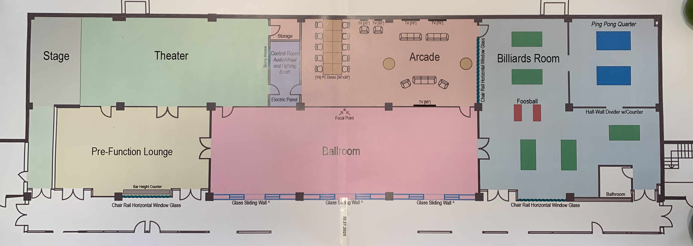

Included among the current projects for the renovation of the Student Union are the creation of several rooms on the ground floor: a "ballroom", a pre-function lounge and theatre (the Rathskeller Events Center), and the installation of digital screens -- backed by a leading edge technology system such as those used in entertainment and meeting venues -- in all rooms at the Rathskellet Events Center.
The budget for the digital screens and technology system is estimated to be $250,000 -- the initial fundraising goal for our class gift fund. If we raise more than this amount prior to 2029, we will explore other needs associated with the Rathskeller Events Center and programming scheduled for its theatre. Even after Reunion 2029, we can continue this class gift fund as a sustainable source of funding for continuous enhancement of the technology system as well as ongoing programming, as part of our commitment to improving student life.
Please join your classmates in supporting our 50th reunion gift to RPI by making a multi-year pledge as an inaugural donor to The RPI Class of 1979 Rathskeller Events Center Fund.
You can read about the 50th Reunion Gift Fund and donate to the fund at the RPI RU Impact website: https://giving.rpi.edu/ru-impact/<\a> and the specific donation website https://securelb.imodules.com/s/1225/lg22/form.aspx <\a>.
Thanks to all who donate to the gift fund and we hope to see all classmates at the 50th Reunion in 2029. (Yes, we are planning ahead like no class ever has before!)
Class of 1979 Rathskeller Events Center Fund<\a>
{kind=link}
RU Impact - Class of 1979 Gift Fund<\a>


RETURN TO CLASS OF 1979 HOME PAGE
RETURN TO Rensselaer Alumni Home Page